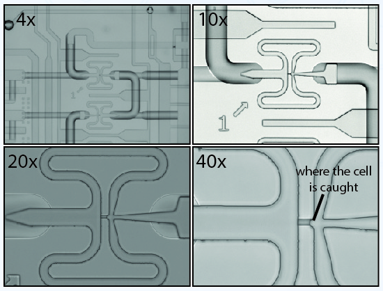
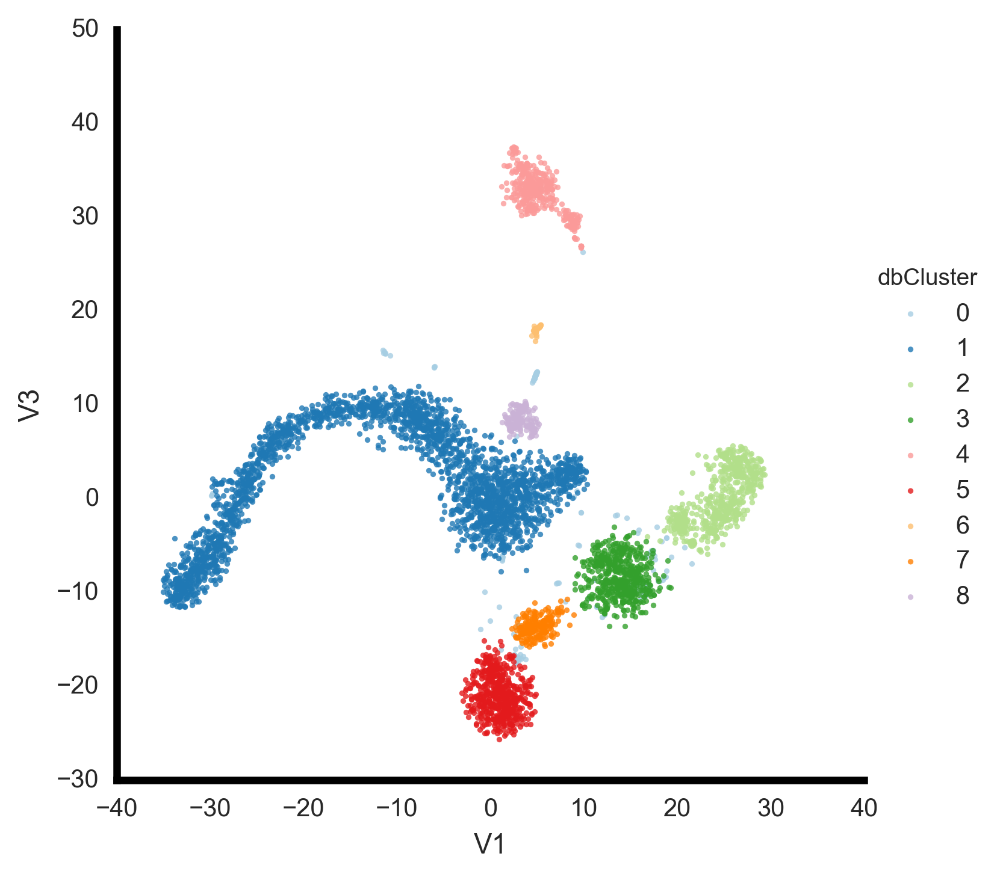
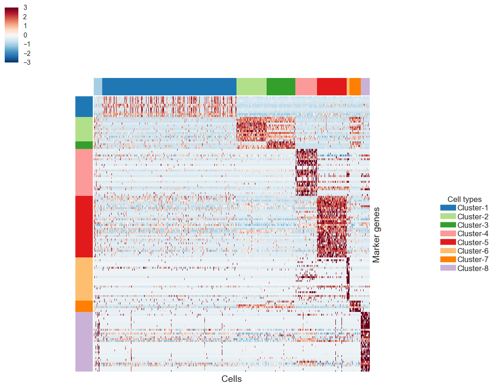

Single cell biology:
Studying every cell
What is a cell?
“The cell is the most basic unit of life”
-Theodor Schwann

Early recognition of different functional cell types
Retina by Ramon y Cajal 1852 - 1934

Many cell types were simply identified by looking under a microscope and looking at morphology. Technological advances in microscopes made this easier and faster
Single Cell Transcriptomics
Defining the genes that specify cell types and states in a diverse array of tissues
Brief history of single cell profiling
It starts with picking cells into a tube

And making an RNA-seq library
It evolved into FACS sorting into plates

Using automated robots to make 10 - 100's of libraries
First generation of microfludics - Fluidigm C1

Capture up to 96 cells in a chamber
C1 Capture Chamber
Droplet based methods revolutionize single cell profiling
Plates -> Droplets
10's -> 1000's of cells
Capturing cells in 1nl oil droplet
10X Genomics
Scales to 48,000 cells per 7 min Run

What is in the beads

Explosion of single cell RNA-seq data
Experimental methods for scRNA-seq data:
- CEL-seq (1,2)
- Drop-seq
- InDrop
- MARS
- SCRB
- Smart-seq (1,2
- SMARter
- 10X-Chromium...
Accuracy of different approaches
Sensitivity of different approaches
Bulk analysis
Till 5 years ago, we had the ability to profile this tissue as bulk
But really, we already know:
That big circle really is:

Why Single Cells?
Bulk analysis is a population average and can hide underlying trends
Cell types of the pancreatic islets
These cell types coordinate the response to increased sugar in your blood after a meal
Pathway to convert food to molecular energy
Delta cells: Integrator of signals
The Challenge:
Computational reconstruction of underlying populations

Bioinformatics
Reads -> Matrix -> Figures
Reads -> Matrix
CellRanger Pipeline

Read 1: Cell barcode UMI
Removing amplification duplicates with UMIs
Counting molecules
Read 2: Transcript specific read
BAM: Alignment and transcript assignment

Summary stats

Summary stats
Expression matrix

Data is sparse - lots and lots of zeros

Single cell RNA-seq data is described as a Zero-Inflated negative binomal distribution

In comparison to a bulk RNA-seq distribution
Dropout rates
These models introduce a new parameter dd , for the dropout rate, to the negative binomial model. We already observed that the dropout rate of a gene is strongly correlated with the mean expression of the gene.Matrix -> Figure
The primary goal of every single cell experiment is to describe the heterogeneity of cell types present in the starting tissue population. This involves:
- Filtering low quality cells
- Filtering really sparse expressed genes
- Normalize gene expression
- Feature selection for clustering
- Dimensionality reduction
- Cluster identification
- Marker gene identification
- Cell type inference
Normalization
Genes detected is directly correlated with sequencing depth

A few genes may take up majority of the reads
In this case 388 genes take up 50% of the reads sequenced
Detection Probability
Some common methods used to address this issue
- CPM (or RPKM or FPKM)
- DESeq2 - size factor
- Upper quartile
- EdgeR - TMM
Clustering with raw counts
https://hemberg-lab.github.io/scRNA.seq.course/index.html
Clustering with CPM normalization

Feature selection
Perhaps the most important step in single cell transcriptome analysis. Some common ways:
- All expressed genes after filters
- Filter genes expressed in > 95% of cells and < 5% of cells
- Top variable genes
- Overdispersed genes
- Highly expressed in 1 cell
Gene selection by variance

Gene selection by overdispersion

Clustering
- Kmeans
- DBSCAN
- sNN - graph based
- Consensus clustering
Often, clustering of the data is performed on dimensionality reduced data, i.e in PCA or tSNE space
Single cell RNA-seq of the mouse thalamus
Summary stats
Genes and Transcripts

Clusters
Clusters
Clusters in 3D
Markers
 All of these are static plots, with low information content, when the data was high informational content.
We can also share excel sheets with relevant information but that is again non-visual and a static interpretation of the data.
Need to facilitate the scientists in each (or multiple) group to explore their data with their expertise.
Let's open the e-notebooks and make sure you everything is ready
Each of you has an Amazon EC2 cloud instance wth jupyter notebooks running python kernels
Let's read in data
def read10X(path):
mat = scipy.io.mmread(os.path.join(path,"matrix.mtx"))
genes_path =os.path.join(path,"genes.tsv")
gene_ids = [row[0] for row in csv.reader(open(genes_path), delimiter="\t")]
gene_names = [row[1] for row in csv.reader(open(genes_path), delimiter="\t")]
barcodes_path = os.path.join(path,"barcodes.tsv")
barcodes = [row[0] for row in csv.reader(open(barcodes_path), delimiter="\t")]
featureData=pd.DataFrame(data=gene_names, index=gene_ids, columns=['Associated.Gene.Name'])
counts=pd.DataFrame(index=gene_ids,columns=barcodes,data=mat.todense())
return counts, featureData
counts, featuredata=read10X('Data/')
How many genes and transcripts did we detect?
def plotQC(counts):
genesdetected=(counts>=1.).sum()
umi_counts=counts.sum()
fig,(ax,ax1)=plt.subplots(1,2,figsize=(10, 5))
genesdetected.plot(kind='hist',bins=np.arange(0,5000,100),lw=0,ax=ax)
ax.grid('off')
ax.patch.set_facecolor('white')
ax.axvline(x=np.median(genesdetected),ls='--',lw=2,c='k')
ax.set_xlabel('Genes',fontsize=13)
ax.set_ylabel('Cells',fontsize=13)
umi_counts.plot(kind='hist',bins=np.arange(0,10000,500),lw=0,ax=ax1,color=sns.color_palette()[1])
ax1.grid('off')
ax1.patch.set_facecolor('white')
ax1.axvline(x=np.median(umi_counts),ls='--',lw=2,c='k')
ax1.set_xlabel('Transcripts - UMI',fontsize=13)
ax1.set_ylabel('Cells',fontsize=13)
plotsQC(counts)
Genes and Transcripts
Filter cells: How many minimum transcripts should we have?
Why filter on transcripts and not genes?
def filterCells(counts):
umi_counts=counts.sum()
cells1000=umi_counts[umi_counts>500].index
return cells1000
Filter genes: Dicard genes that are very very sparsely expressed
A gene has at least 2 transcripts detected in at least 2 cells
def filterGenes(counts):
filteredGenes=counts.index[(counts >= 2).sum(1) >=2]
return filteredGenes
Filter & Normalize gene expression
def normalize(counts):
cells1000=filterCells(counts)
filteredGenes=filterGenes(counts)
umi_counts=counts.sum()
cpt=counts*np.median(umi_counts)/umi_counts
cpt=cpt.loc[filteredGenes,cells1000]
cpt=(cpt+1).apply(np.log)
return cpt
cpt=normalize(counts)
How many genes and cells are left after filtering
cpt.shape
Dimensionality reduction with tSNE
def runTSNE(cpt,genes):
np.savetxt('Data/filtered.tsv', cpt.loc[top1000].T.values, delimiter='\t')
cmd='/opt/bhtsne/bhtsne.py -d 3 -i Data/filtered.tsv --no_pca -r 1024 -o Data/out.tsv'
cmd=shlex.split(cmd)
proc=subprocess.Popen(cmd,stdout=subprocess.PIPE,stderr=subprocess.PIPE)
stdout, stderr=proc.communicate()
tsne=np.loadtxt('Data/out.tsv')
tsneData=pd.DataFrame(tsne,index=cpt.columns, columns=['V1','V2','V3'])
return tsneData
tsnedata=runTSNE(cpt,top1000)
We reduced the data to 3 dimensions, so we can visualize multiple dimensions. The three dimensions are represented by V1,V2,V3. Try to change the dimension and see how the different clusters.
plt.scatter(tsnedata['V2'],tsnedata['V3'],s=5)
Clusters
Lets look at a gene and it's expression across all clusters
Lets try a few others
plotTSNE(cpt,tsnedata,'Gapdh',featuredata,'V1','V3')
plotTSNE(cpt,tsnedata,'Emcn',featuredata,'V1','V3')
plotTSNE(cpt,tsnedata,'Slc32a1',featuredata,'V1','V3')
plotTSNE(cpt,tsnedata,'Slc17a6',featuredata,'V1','V3')
plotTSNE(cpt,tsnedata,'Gfap',featuredata,'V1','V3')
DBSCAN to call clusters
def dbscan(tsnedata,eps,minCells):
from sklearn.cluster import DBSCAN
db = DBSCAN(eps=eps, min_samples=minCells).fit(tsnedata.values)
tsnedata['dbCluster'] = db.labels_+1
return tsnedata
There are 2 main parameters in DBSCAN to influence clustering, eps and minCells. Change these parameters to see how the cluster calling is influenced
tsnedata_dbscan=dbscan(tsnedata,3.5,40)
plotTSNEClusters(tsnedata_dbscan,'V2','V3')
Clusters
Differential Expression (DE) analysis
Every analyses with analyzing bulk RNA-seq data eventually involves to identifying differentially expressed genes between experimental conditions. Many methods, e.g. DESeq2 and edgeR, have been developed for bulk RNA-seq. These algorithms although not ideal for single cell RNA-seq data can still provide robust results.
Some of the many algorithms are listed here for reference:
- edgeR
- DESeq2
- KS
- Mann whitney U
- T-test
- SCDE - specifically for single cell
- T-test
- AUROC
- And many more
AUROC to find markers
def findMarkers(cpt,cells1,cells2,genes):
aucScores=[]
from sklearn import metrics
for gene in genes:
y=[1]*len(cells2)+[2]*len(cells1)
pred = np.concatenate((cpt.loc[gene,cells2],cpt.loc[gene,cells1]))
fpr, tpr, thresholds = metrics.roc_curve(y, pred, pos_label=2)
aucScores.append(metrics.auc(fpr, tpr))
return pd.DataFrame(aucScores,index=genes,columns=['Score'])
aurocScoresAll=pd.DataFrame()
for cluster in range(1,8,1):
cells1=tsnedata_dbscan[tsnedata_dbscan['dbCluster']==cluster].index
cells2=tsnedata_dbscan.index.difference(cells1)
data1=cpt.loc[cpt.index,cells1].apply(expMean,1)
data2=cpt.loc[cpt.index,cells2].apply(expMean,1)
totaldiff=(data1-data2)
genes=totaldiff[totaldiff>1.].index
aurocScores=findMarkers(cpt,
cells1,
cells2,
genes
)
aurocScores['Associated.Gene.Name']=featuredata['Associated.Gene.Name']
aurocScores['dbCluster']=cluster
aurocScoresAll=aurocScoresAll.append(aurocScores)
Visualize marker expression across all cells
Marker genes
Plp1,Cldn11,Ugt8a,Sirt2,Mag,Mobp,Cnp,Mbp,Cck,Pcp4,Nap1l5,Meg3,Gap43,Rgs5,Itm2a,Tmsb4x,Slc16a1,Igfbp7,Hbb-bt,Hbb-bs,Bsg,Klf2,Junb,Hba-a1,Hba-a2,Sparc,Ctla2a,Cldn5,Dbi,Atp1a2,Slc1a2,Cst3,Fabp5,Plpp3,Id3,Sparcl1,Ptn,Apoe,Gja1,Fabp7,Cpe,Mt3,Mt1,Ndrg2,Clu,Aldoc,Id2,Ckb,Pla2g7,Aqp4,Col3a1,Igfbp2,Ptgds,S100a6,Col1a2,Ptn,Cxcl12,Nupr1,Igf2,Dcn,Lum,Col4a1,Klf2,Junb,Sparc,Vtn,Col1a1,Lgals1,Apod,Fcer1g,B2m,Cst3,Tmsb4x,P2ry12,Ctss,C1qb,C1qc,C1qa,Tyrobp,Ftl1,Ctsd,Junb,Ccl2,Ccl7,Ccl12,Ccl3,Ccl4,Cd83,Hexb,Rps29,Lgmn,Sepp1
CellView: Interactive Exploration Of High Dimensional Single Cell RNA-Seq Data
A web application to visualize and explore single cell RNA-seq data
mkRds(cpt,featuredata,tsnedata_dbscan)
Download Data.Rds and we will upload to this website:
https://mbolisetty.shinyapps.io/CellView/
1.15 million cells and counting
Assignment
- Identify and evaluate atleast 3 different normalization approaches
- Identify and evaluate atleast 3 different feature selection
- Process, filter, cluster and identify cell types in a dataset
Questions?
email me: mohan.bolisetty@jax.org
slides: https://mohanbolisetty.github.io/MEDS6498-SingleCell/